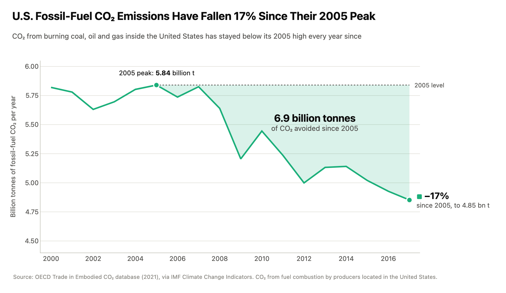
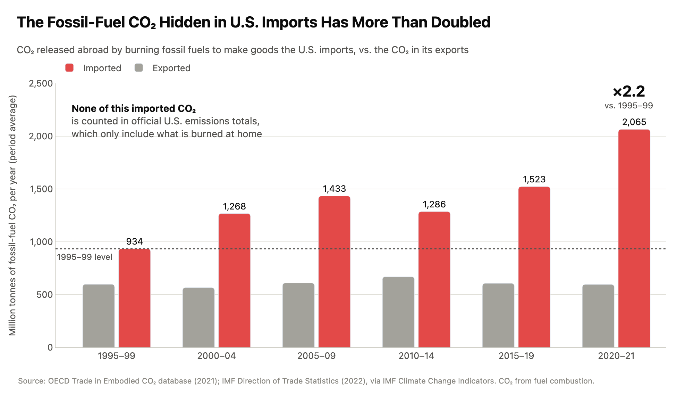

Proposition: U.S. CO₂ emissions from burning fossil fuels are no longer a growing climate problem.
Dataset: IMF Climate Change Indicators, United States. Both visualizations use the indicator CO₂ Emissions embodied in Domestic Final Demand, Production, and Trade, which comes from the OECD Trade in Embodied CO₂ (TeCO₂) database and counts CO₂ from fuel combustion only. Design decisions are scored from −2 (fully deceptive) to +2 (fully earnest).
FOR the Proposition

Design Decisions and Rationale:
- Ending the window in 2017 and starting it in 2000 (Score: −1.5). The dataset runs from 1995 to 2018, but emissions rose 2.8% in 2018 (4.85 → 4.99 billion tonnes). Stopping one year early lets the line end at its lowest point and gives the headline its largest possible drop: −17%, versus −15% through 2018. Starting in 2000 also hides that 2017 is only 6% below 1995, so the 2005 peak reads as a high plateau rather than a short bump. We tried the full 1995–2018 range, but it ended on an uptick and invited a "we're just back to 1990s levels" reading. Few readers know where the data actually stops, which makes this cut hard to catch and is why we score it as deceptive.
- Truncated y-axis starting at 4.4 billion tonnes (Score: −1). On a zero-based axis, the 2005–2017 decline would fill about 16% of the plot height; on this axis it fills about 60%, so a moderate decline reads as a steep fall. We kept the tick labels evenly spaced and clearly labeled, so a careful reader can recover the true scale. Line charts are conventionally allowed a non-zero baseline, which is exactly what makes the choice feel normal. A zero-based version made the decline look like a gentle slope that undercut the title.
- The "6.9 billion tonnes avoided" calculated field (Score: −1). For every year after 2005 we computed the gap between that year's emissions and the 2005 peak, summed the gaps, and shaded the area green. The arithmetic is correct, but the word "avoided" quietly assumes that emissions would otherwise have stayed at their all-time high every year, and it implies deliberate action. Turning a yearly rate into one large cumulative number makes the progress feel concrete and is the chart's main emotional payload. We considered a bar chart of year-over-year changes, but a single big number was more memorable.
- Production-based fossil-fuel CO₂, labeled precisely (Score: +1.5). We plot "CO₂ embodied in production", the territorial measure that national inventories and climate agreements use, so the series itself is not cherry-picked. After checkpoint feedback, the title, subtitle, axis and source note all say "fossil-fuel CO₂" or "fuel combustion", because that is exactly what the OECD series measures; this narrows our claim to what the data can support. The measure is still incomplete: it leaves out the CO₂ released abroad to make goods Americans import, which is the gap the AGAINST chart exploits.
- Selective annotation and a calm green palette (Score: −0.5). We labeled only the 2005 peak and the 2017 endpoint, and drew a dotted "2005 level" line so every later year reads as an improvement on the worst year. We deliberately left the 2009 dip (−7.7% in a single year) unlabeled: it was driven largely by the Great Recession rather than climate policy, and naming it would have handed readers a less flattering explanation for the decline. Green, a conventional color for environmental progress, and a subtitle stressing "every year since" reinforce the sense that the problem is behind us.
AGAINST the Proposition

Design Decisions and Rationale:
- Measuring the CO₂ embodied in imports, with exports as the baseline (Score: +1.5). Counting the CO₂ emitted abroad to make what Americans buy is an established method (the OECD TeCO₂ database exists to measure it), and it directly answers the FOR chart: territorial inventories really do leave this CO₂ out. Showing exports next to imports keeps the comparison fair, since it shows that the U.S. is a large net importer of embodied carbon (exports stay flat near 600 million tonnes), not just that trade grew. The annotation "None of this imported CO₂ is counted in official U.S. emissions totals" is true, and it reframes the FOR chart's decline as an accounting artifact rather than progress.
- Splicing two estimation methods into one series (Score: −2). Values for 1995–2018 come from the OECD TeCO₂ database, while 2019–2021 come from a different IMF extension built on trade statistics. At the seam, imports jump 66% in a single year (1,362 → 2,260 million tonnes), which reflects a change in method rather than a real surge. Using OECD years alone, the period average rises only about 1.4×; including the spliced years pushes the last bar to 2.2×, which is where the title's "more than doubled" comes from. The source note cites both datasets but never says where one stops, so only a reader who opens the raw data would notice. This is the most deceptive choice in our project.
- Five-year bins with a two-year final bin (Score: −1). Averaging years into periods is a calculated grouping that legitimately damps year-to-year noise, such as the 2009 trade collapse. Here it also hides the 2019 break: the 66% one-year jump becomes a smooth step between bars. The last bin averages only 2020–2021, both from the spliced source, yet it is drawn exactly like the five-year bins. Our checkpoint also had a yearly line version of this chart, but the one-year spike looked suspicious there, so we chose the binned bars.
- A 1995–99 reference line and a "×2.2" callout (Score: −0.5). The dotted line at the first period's level makes every later bar read as "more than then", and the ×2.2 callout compares the lowest period with the highest. This endpoint comparison skips the 10% decline from 2005–09 to 2010–14, which would have weakened the "keeps climbing" story. The bars do start at zero, so their lengths are honest; the slant is in which comparison we chose to spell out.
- Red versus gray, and the word "hidden" (Score: −0.5). Imports are drawn in alarm red and exports in neutral gray, so the eye lands on the growing bars and reads them as a warning. Calling the CO₂ "hidden" implies concealment, when the data is published and simply counted under a different accounting convention. Following checkpoint feedback, the title, subtitle and axis now name the quantity as "fossil-fuel CO₂", so the slant lives in word choice and color rather than in any ambiguity about what is being measured.
Final Reflection
The most straightforward part of the project was finding two opposing stories. Both of our charts come from the same IMF/OECD table, and every number on them is accurate: emissions produced inside the U.S. really did fall after 2005, and the CO₂ embodied in U.S. imports really is large and growing. Persuasion turned out to be mostly a matter of selection: which column to plot, which years to include, where to put the baseline, and which comparison to spell out in large type. The hard part was keeping the deceptive choices subtle. Our checkpoint feedback showed this clearly. Two of our draft charts drew IMF projections for 2023–2030 as if they were measured data, and reviewers caught it at once. They also flagged that our original proposition said "CO₂ emissions" when the data only covers fossil-fuel combustion, so we narrowed it. Meanwhile, the feedback never mentioned the FOR chart's missing 2018 or the method seam inside the AGAINST chart's last bar. Deceptions that are drawn on the chart get noticed; deceptions in what is left out mostly do not.
What surprised us most was how much our earnest choices helped our deceptive ones. Cited sources, honest tick labels, a zero-based bar chart and a precise "fossil-fuel CO₂" label all signal trustworthiness, and that trust is what lets a truncated window or a spliced series slip past. We were also surprised by how natural some slanted choices felt while we made them. Calling the shaded area "avoided" emissions, or calling imported carbon "hidden", seemed like ordinary headline writing until we tried to defend each word against the data. The two charts reach opposite conclusions without a single false number, which convinced us that the ethics of a visualization lie in the relationship between the chart and the claim it is used to support, not in the numbers alone.
We now define ethical analysis and visualization as design whose conclusion would survive the reader learning about every choice behind it. That gives us a working boundary. Choices that only emphasize something true, like color, annotation, a framing title or picking one legitimate measure over another, are acceptable persuasion, because disclosing them does not change what the data says. Choices that change what the data appears to say are misleading: cutting the time window to hide a reversal, splicing incompatible methods into one series, drawing forecasts as observations, or stating a counterfactual as fact. A simple test is whether adding one honest sentence to the caption ("data continues to 2018, when emissions rose"; "2019–2021 use a different method") would collapse the argument. If it would, the choice is deceptive. The boundary is still blurry: a truncated axis on a line chart is conventional and often reasonable, yet its effect on our FOR chart was the same as a deliberately exaggerated one. For that reason we think intent and disclosure matter as much as any rule about axes or colors.